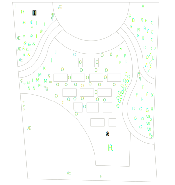

juni 2019 | maart 2020 | mei 2020 | juli 2020 | mei 2021 | juni 2021 | te doen

Nieuwe kruiptijm, in de hoop dat hij deze keer de nattigheid overleeft. Ik heb van vier verschillende soorten Thymus praecox (O) elk zes planten gezet (Albiflorus, Coccineus, Doone Valley en Red carpet): benieuwd of ze het allemaal even goed of slecht doen.
Ook: nieuwe tomaten (Æ). Ik heb er drie in volle gron gzet en drie in een grote pot, en voor alle zes ben ik een beetje bezorgd, want het zijn van die megagrote tomaten en ik vrees dat de planten gewoon niet recht gaan blijven, ondanks de tomatenspiralen en al.
| Naam | in 't Latijns | # | |
|---|---|---|---|
| A | klimroos | Rosa "guirlande d'amour’ | 1 |
| B | donkere ooievaarsbek | geranium phaeum | 5 |
| C | klokjesbloem | campanula latifolia ‘Alba’ | 5 |
| D | mannetjesvaren | Dryopteris felix-mas | 2 |
| E | hartlelie | Hosta sieboldiana ‘elegans’ | 1 |
| F | Japanse zegge | Carex morrowii ‘goldband’ | 4 |
| G | purper klokje | Heucherella ‘Kimono’ | 6 |
| H | prachtriet | Miscanthus sinensis ‘Ferner oster‘ | 3 |
| I | rode zonnehoed | Echinacea purpurea ‘Alaska’ | 4 |
| J | lavendel | Lavendula angustifilia ‘Alba’ | 2 |
| K | salie | Salvia | 2 |
| L | rozemarijn | Rosemarinus | 3 |
| M | tijm | Thymus | 2 |
| N | oregano | Oregano vulgare | 2 |
| P | schoenlappersplant | Bergenia cordifolia | 5 |
| O | kruiptijm | Thymus praecox 'Albiflorus' | 6 |
| Thymus praecox 'Coccineus' | 6 | ||
| Thymus praecox 'Doone Valley' | 6 | ||
| Thymus praecox 'Red carpet' | 6 | ||
| Q | bloedooievaarsbek | Geranium sanguineum | 15 |
| R | Japanse esdoorn | Acer palmatum dissectum | 1 |
| S | stekelnootje | Acaena buchananii | 30 |
| % | dragon | Artemisia dracunculus | 1 |
| T | witte regen | Wisteria floribunda ‘Alba’ | 1 |
| U | vuurdoorn | Pyracantha coccinea ‘Orange glow’ | 1 |
| W | geitenbaard | Aruncus dioicus | 3 |
| X | clematis | Clematis armandii ‘Apple blossom’ | 3 |
| Y | prachtklokje | Campanula persicifolia ‘Alba’ | 2 |
| Z | duizendknoop | Persicaria affinis ‘Darjeeling Red’ | 5 |
| & | vlambloem | Phlox subulata ‘Purple Beauty’ | 5 |
| # | vlambloem | Phlox subulata ‘Amazing grace’ | 4 |
| € | vlambloem | Phlox paniculata ‘Logan black’ | 2 |
| @ | bieslook | Allium schoenoprasum | 3 |
| £ | kattenkruid | Nepeta faassenii ‘Six Hills Giant’ | 2 |
| $ | kattenkruid | Nepeta faassenii ‘Snowflake’ | 3 |
| Μ | meiklokje | Convallaria majalis | 2 |
| * | marjolein | Origanum majorana | 1 |
| + | muurleeuwenbek | Cymbalaria muralis | ?? |
| < | pepers | onbekend merk | 1 |
| æ | trostomaten | onbekend merk | 1 |
| ¶ | vetkruid | Sedum cauticola 'Lidakense' | 5 |
Die "??"" bij kruiptijm en muurleeuwenbek: da's omdat ik geen flauw idee heb hoeveel planten er van zijn, wegens dat die dingen uitzaaien voor vermoord.